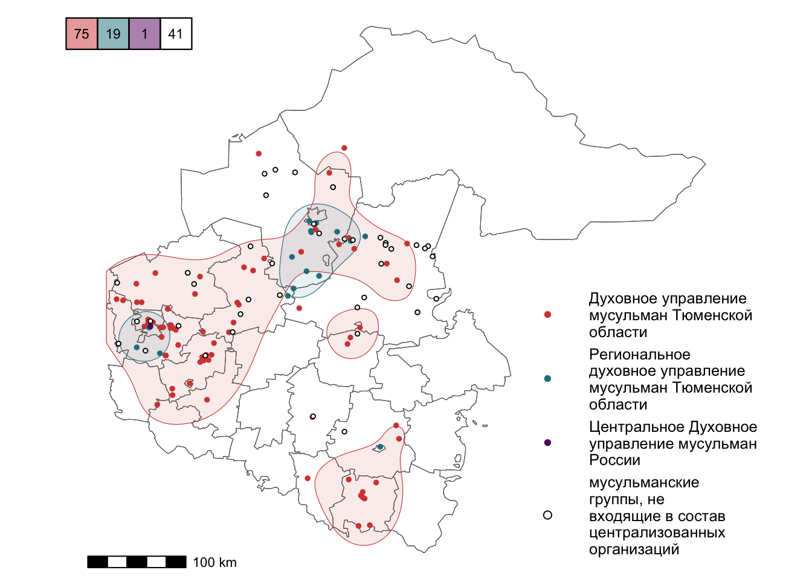

4 Тематические материалы и карты
4.1 Численность религиозных общин
Религиозные общины по числу участников еженедельных молитвенных собраний
Ислам

В Тюменской области свыше 100 действующих мечетей. Крупнейшие мусульманские молитвенные собрания проходят в мечети им. Умара ибн Хаттаба на ул. Жданова и мечети Центрального духовного управления мусульман России на ул. Мельникайте в городе Тюмени, в Соборной мечети г. Тобольска. Еженедельно они собирают более 500 человек, а на праздничные молитвы – более тысячи.
Православие

В Тюменской области свыше 170 действующих молитвенных помещений (храмов, часовен, молитвенных комнат). Крупнейшие из них: Знаменский кафедральный собор в Тюмени и Троицкий собор на территории Епархиального Свято-Троицкого мужского монастыря в Тюмени. В Вербное воскресенье и на Пасху Знаменский собор посещают две-четыре тысячи человек.
Католицизм

В регионе пять католических храмов – в Тюмени, Тобольске, Ишиме, в с. Омутинка и поселке Голышманово. Крупнейшие молитвенные собрания проходят в храме Римско-католической Церкви Св. Праведного Иосифа в г. Тюмени. Праздничные богослужения собирают здесь порядка 100 человек.
Иудаизм

Единственная в Тюменской области синагога находится в г. Тюмени. Праздничные богослужения посещают здесь порядка 100 человек.
4.2 Централизованные религиозные организации
Исламские объединения

Наиболее крупными объединениями, организующими религиозную жизнь мусульман в Тюменской области, являются: Централизованная религиозная организация Духовное управление мусульман Тюменской области, Централизованная религиозная организация Региональное духовное управление мусульман Тюменской области, Центральное духовное управление мусульман России. Крупнейшей из них является Духовное управление мусульман Тюменской области, в систему управления которого входит более 70 местных мусульманских организаций. Часть мусульманских объединений действуют самостоятельно от централизованных мусульманских организаций в статусе религиозных групп.
Объединения православных христиан
Основным организатором религиозной жизни православных верующих является духовенство Тобольской митрополии Русской православной церкви (Московский патриархат). Именно вокруг православных приходов этой институции концентрируется наибольшая часть жителей Тюменской области, ассоциированных с православием. Храмы города Ишима, а также населённых пунктов Абатского, Аромашевского, Армизонского, Бердюжского, Викуловского, Голышмановского, Ишимского, Казанского, Омутинского, Сладковского, Сорокинского и Юргинского районов окормляются священнослужителями Ишимской епархии Тобольской митрополии. Службы в остальных православных храмах области проводятся представителями Тобольско-Тюменской епархии Тобольской митрополии.
4.3 Объекты с охранным статусом
В Тюменской области четырнадцать религиозных объектов признаны объектами культурного наследия федерального уровня и еще двадцать девять религиозных объектов – объектами культурного наследия регионального значения. Самый ранний из них - Знаменский собор на территории Свято-Знаменского мужского монастыря в с. Абалак Тобольского района, построен в 1683 году.